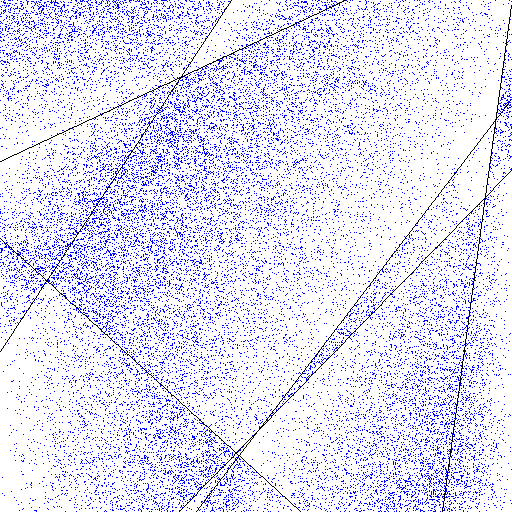

A small Common Lisp program that generates abstract pictures.
draw-random draws a handful of random lines on a blank
canvas. The lines partition the canvas into areas. Each area is
then filled with random dots whose density decreases along a random
direction chosen independently for that area. The result is written
as a PNG file.

[0, 1] over the area.max-density × (1 - s), so density decays
linearly from one end of the area to the other.The only external dependency is zpng, available in Quicklisp. The program has been tested with SBCL.
From a REPL with Quicklisp available:
(push #P"/path/to/com-informatimago/small-cl-pgms/draw-random/"
asdf:*central-registry*)
(ql:quickload "com.informatimago.small-cl-pgms.draw-random")
(com.informatimago.small-cl-pgms.draw-random:draw-random
:pathname "example.png")
All parameters are keyword arguments with sensible defaults:
(com.informatimago.small-cl-pgms.draw-random:draw-random
:width 512
:height 512
:background #(255 255 255) ; white
:line-color #(0 0 0) ; black
:dot-color #(0 0 255) ; blue
:min-lines 6
:max-lines 8
:max-density 0.25
:pathname "example.png")
| Keyword | Default | Meaning |
|---|---|---|
:width | 512 | Canvas width in pixels. |
:height | 512 | Canvas height in pixels. |
:background | #(255 255 255) | Background color, as an RGB vector of bytes. |
:line-color | #(0 0 0) | Color used to draw the lines. |
:dot-color | #(0 0 255) | Color used to stipple the areas. |
:min-lines | 6 | Lower bound on the number of random lines. |
:max-lines | 8 | Upper bound on the number of random lines. |
:max-density | 0.25 | Fraction of pixels stippled at the dense end of each area. |
:pathname | "draw-random.png" | Output PNG file path. |
Copyright © Pascal J. Bourguignon 2026. Distributed under the GNU Affero General Public License, version 3.
{kind=link}